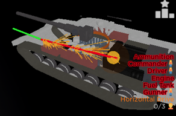

CTS Wiki:
Damage system:
green
>yellow
>orange
>red
>black
(destroyed)).Damage interface pops up on the top right when you hit an enemy tank.
Green
indicates pre-contact shell,red
indicates post-pen shell,yellow
indicates spall,blue
indicates ricochet.Some modules cause negative effects when damaged:
If set on fire, it will gradually damage modules and crews in a radius. This will also stop repairs.
Track | WheelDoes not allow the damaged module to move (in case of wheels, gradually reduces the speed, depending on the number of damaged wheels)
RadiatorIf broken, the engine will be set on fire if it breaks.
Engine | TransmissionThe more damaged they are, the lower your top speed is. Either one stops movement if broken.
CannonThe more damage, the (negligible) less accuracy and penetration your shots have.
BreechThe more damaged it is, the higher the chance of non-firing, forcing you to wait 5s then reload your gun.
Horizontal drive | Vertical driveThe more damaged it is, the slower the traverse.
Ammunition
When destroyed, it destroys the entire crew along with the tank.
Ammunition can be blowout-protected. This can be checked when inspecting a part and pointing at an ammo hitbox without x-ray.
If destroyed, you can't fire a secondary.
APS | APS radarAPS stops working in the sector where it is damaged
Tracking Radar | Search RadarInability to track / detect targets
DriverLosing a driver does not allow you to drive the tank if there is no other living driver.
GunnerLosing a gunner does not allow the gun to be aimed if there is no other alive gunner.
LoaderLosing a loader incurs a 2x reload penalty. If a turret does not have a loader, that means it is autoloaded.
Ammo types:
-|
CE (Chemical Energy):
High Explosive: Explodes on contact, which, if penetrated, deals massive damage
HEATHigh Explosive Anti Tank: Generates fewer spall, but does a lot of damage if it hits the module
HESHHigh Explosive Squash Head: Same as HE, but has more penetration but less explosive power
ATGMAnti Tank Guided Missle: HEAT, but can be guided after the shot is fired
KE (Kinetic Energy):
Armor Piercing: Pierces armor, generating shrapnel
APDSArmor Piercing Discarding Sabot: Better at penetrating sloped armor than AP, but generates less shrapnel
APFSDSArmor Piercing Fin Stabilised Discarding Sabot: Same as APDS, but even better at penetrating sloped armor
APHEArmor Piercing High Explosive: Pierces armor and explodes inside the tank, which does a large amount of damage
When CE rounds penetrate, they travel a set distance before dissipating, creating spall out of penetrated armour. This spall tends to be more sporadic than KE spall, sometimes damaging modules parallel.
When KE rounds penetrate, their penetration only depletes when going through armour. Hence they are not as weak against spaced areas. However, their cone of spall is more focused.
Reload formula:
Game Modes:
There are 4 game modes in the game at the moment:
At the beginning of the game, 1000 tickets are given. For each player respawn, 40 tickets are taken away from the team. There are no points in this mode.
SkirmishAt the beginning of the game, 1200 tickets are given. For each player respawn, 20 tickets are taken away from the team. There will be one point in the center of the map. If one team captures it, the opposing team will lose tickets.
DefenceAt the beginning of the game 1200 tickets are given. For each player respawn, 30 tickets are taken away from the team. Each team has a "home" point. If the other team captures it, it is almost guaranteed to win.
ConquestAt the beginning of the game 1200 tickets are given. For each player respawn, 20 tickets are taken away from the team. There will be a total of 3 points on the map. If two of them are captured by one team, tickets will be drained from the opposite team.
Maps:
In map rotate: yes
Description: Where have I seen this map from??

In map rotate: yes
Description: Vigilance will be your greatest friend.
In map rotate: yes
Description: Wait... Is this the rigging place?

In map rotate: yes
Description: Brrr... make sure to check your surroundings.

In map rotate: yes
Description: X Æ A-12
In map rotate: no
Description: Bumpy terrain. Use a mobile vehicle!
In map rotate: yes
Description: ⚠️ We just nuked the building ⚠️

In map rotate: yes
Description: The machinery...

In map rotate: yes
Description: Desert costruction site. Beware of sharp shooters!

In map rotate: no
Description: Wait... Combustion engines don't work in space! Why's there still sounds?! Literally unplayable...

In map rotate: no
Description: Don't ask what happened in 1984...
.png)
In map rotate: no
Description: Don't ask what happened in 1984...
In map rotate: yes
Description: